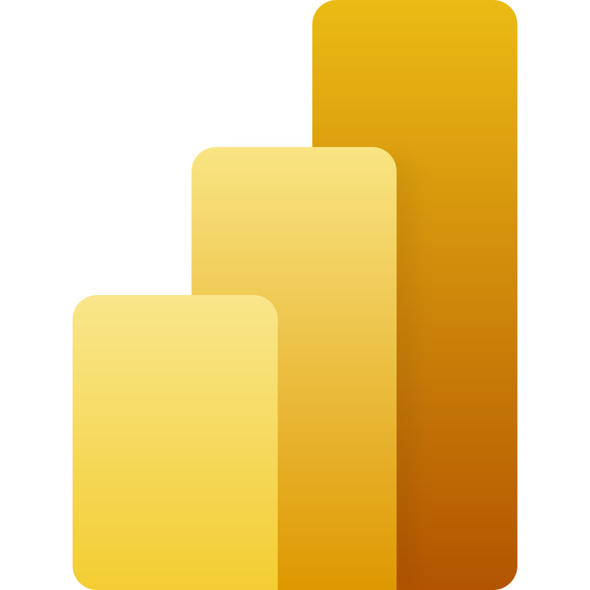
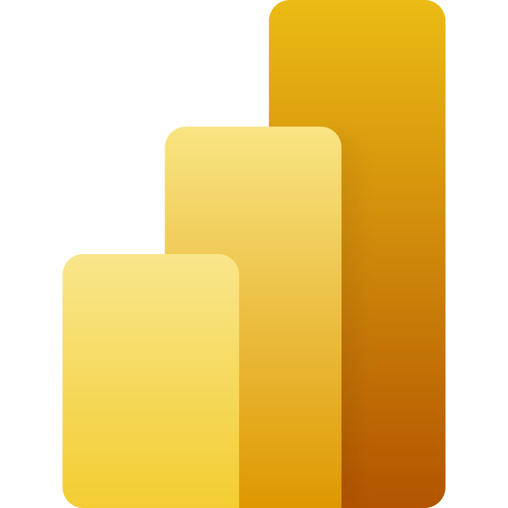

Objectifs
Ce projet visait à analyser les indicateurs sociaux de l'Union Européenne afin de mesurer le respect du socle européen des droits sociaux par les États membres.
Objectifs principaux :
- Évaluer les disparités sociales entre les pays membres.
- Identifier les progrès réalisés par l'UE en matière de cohésion sociale.
- Mettre en lumière les défis persistants, notamment en termes d'inégalités sociales.
Étapes du Projet
- Contextualisation et Collecte des Données : Identification des indicateurs sociaux pertinents à partir de la base Eurostat.
- Création et Structuration de la Base de Données : Importation dans R, création d’un dictionnaire des variables.
- Analyse Statistique : Étude univariée, bivariée, et analyses avancées des relations entre indicateurs.
- Reporting et Datavisualisation : Graphiques interactifs et rapports automatisés.
- Synthèse et Recul Méthodologique : Résumé des résultats et analyse critique des méthodes.
Résultats
Résultats clés :
- Les pays de l'Est (Roumanie, Bulgarie) présentent encore des retards significatifs en matière d'indicateurs sociaux.
- Progrès notables depuis 2010 dans plusieurs pays, notamment en termes de revenu disponible.
- Nécessité d’un soutien accru aux États en difficulté pour atteindre les objectifs sociaux à l'horizon 2030.
Visuels du Projet
Recueil Méthodologique
Forces :
- Identification des indicateurs sociaux pertinents et contextualisation complète.
- Utilisation de méthodes rigoureuses comme les régressions linéaires et tests Khi².
Faiblesses :
- Données limitées pour certains pays.
- Analyse restreinte par le manque d’indicateurs qualitatifs pour certaines variables.
Outils & Langages Utilisés
 
